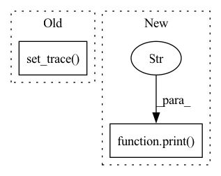

Pattern ID :29069
Before Change
Returns:
Three NewDatasets containing synthetic data
import pdb; pdb.set_trace()
func = synths[func_name]
// print("Time to synthesize")
After Change
x_train, y_train = func(seed_data_train, query, query_limit, *args, **kwargs)
x_test, y_test = func(seed_data_test, query, query_limit, *args, **kwargs)
print("Synthesis complete" )
// Presently, we have hard-coded specific values for the test-train split.
// In the future, this should be automated and/or optimized in some form.
x_train, x_valid, y_train, y_valid = train_test_split(In pattern: SUPERPATTERN
Frequency: 4
Non-data size: 2
Instances Fragment ID: 85783124
Project Name: trailofbits/privacyraven
Commit Name: 2de4429191530689135d601fcc1202648e8e88ff
Time: 2020-12-15
Author: suhashussain1@gmail.com
File Name: src/privacyraven/extraction/synthesis.py
M Class Name: AnonimousClass
N Class Name: AnonimousClass
M Method Name: synthesize(5)
N Method Name: synthesize(5)
M Parent Class:
N Parent Class:
M File Name: src/privacyraven/extraction/synthesis.py
N File Name: src/privacyraven/extraction/synthesis.py
M Start Line: 34
M End Line: 34
N Start Line: 45
N End Line: 45
Before Change
// How do I efficiently do this? map, filter, reduce?
import pdb
pdb.set_trace()
y_data = torch.Tensor([query(x_data)]).float()
// y_data = torch.FloatTensor([query(x_data)])After Change
print("With unbind()")
print(y_data.size())
print("Without" )
test = query(x_data)
print(test.size())
// import pdb; pdb.set_trace()
Fragment ID: 85783125
Project Name: trailofbits/privacyraven
Commit Name: 111344ad0f16fc80e537f17c338152f8f9ff6346
Time: 2020-11-27
Author: suhashussain1@gmail.com
File Name: src/privacyraven/extraction/synthesis.py
M Class Name: AnonimousClass
N Class Name: AnonimousClass
M Method Name: new_copycat(6)
N Method Name: new_copycat(6)
M Parent Class:
N Parent Class:
M File Name: src/privacyraven/extraction/synthesis.py
N File Name: src/privacyraven/extraction/synthesis.py
M Start Line: 152
M End Line: 154
N Start Line: 126
N End Line: 133
Before Change
self.geno_count = Counter()
def search(self):
pdb.set_trace()
print("Searching starts:")
start_time = time.time()
for epoch in range(self.config["search"]["epochs"]):
self.epoch += epochAfter Change
genotype = self.model.genotype()
self.geno_count[str(genotype)] += 1
if self.geno_count[str(genotype)] >= self.config["search"]["best_geno_count"]:
print(">= best_geno_count" )
return genotype
shell_loss, kernel_loss = self.train()
val_loss = self.validate() Fragment ID: 85783127
Project Name: woodywff/nas_3d_unet
Commit Name: 483c269d68b745c65d71e2a8566c35bd92e0b584
Time: 2020-03-23
Author: woodywff@aliyun.com
File Name: search.py
M Class Name: Searching
N Class Name: Searching
M Method Name: search(1)
N Method Name: search(1)
M Parent Class:
N Parent Class:
M File Name: search.py
N File Name: search.py
M Start Line: 103
M End Line: 132
N Start Line: 104
N End Line: 130
Before Change
out_dataset = TensorDataset(outputs,labels)
print("Calibrating...")
for lam in reversed(lambdas):
pdb.set_trace()
losses = get_rcps_losses_from_outputs(model, out_dataset, rcps_loss_fn, lam-1/config["num_lambdas"], device)
Rhat = losses.mean()
print(f"\rLambda: {lam:.4f} | Rhat: {Rhat:.4f}",end="")
if Rhat > alpha: // TODO: Replace with concentrationAfter Change
print(f"\rLambda: {lam:.4f} | Rhat: {Rhat:.4f} | RhatPlus: {RhatPlus:.4f} ",end="")
if RhatPlus > alpha: // TODO: Replace with concentration
model.lhat = lam
print("" )
break
return model
Fragment ID: 85783123
Project Name: aangelopoulos/im2im-uq
Commit Name: cb2ad9d5fd028a69bc229aefa9e0a731a407b568
Time: 2021-06-18
Author: angelopoulos@n0024.abc0
File Name: core/calibration/calibrate_model.py
M Class Name: AnonimousClass
N Class Name: AnonimousClass
M Method Name: calibrate_model(3)
N Method Name: calibrate_model(3)
M Parent Class:
N Parent Class:
M File Name: core/calibration/calibrate_model.py
N File Name: core/calibration/calibrate_model.py
M Start Line: 49
M End Line: 53
N Start Line: 57
N End Line: 73